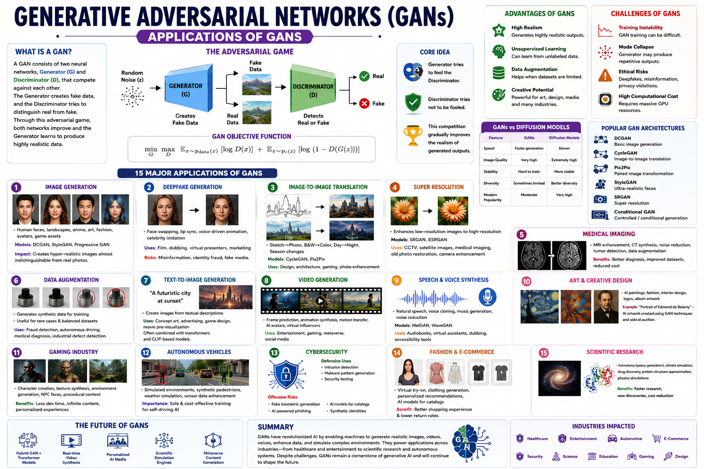

From image synthesis to drug discovery — explore the transformative real-world applications of GANs.
Generative Adversarial Networks (GANs) have revolutionized generative modeling across domains. This guide covers 10 key application areas — including image-to-image translation, super-resolution, text-to-image synthesis, data augmentation, anomaly detection, and medical imaging — with practical code examples, architecture breakdowns, and a comprehensive self-assessment quiz for the CGAI exam.

Generation, SR,Translation, InpaintingText-to-Image,Style Transfer, TTSDrug Discovery,Medical Imaging, Genomics📊 GAN applications across computer vision, multimodal AI, and scientific domains
GANs synthesize photorealistic images from random noise. StyleGAN generates high-resolution faces with disentangled latent controls over pose, hairstyle, and lighting.
Translates an input image from one domain to another using paired training data — e.g., sketches → photos, day → night, segmentation masks → scenes.
Translates between domains without paired examples using cycle-consistency loss. Famous for horse↔zebra and photo↔painting style transfer.
Upscales low-resolution images to high resolution with perceptually convincing details. SRGAN uses perceptual loss based on VGG features.
Generates images conditioned on text descriptions. StackGAN uses a two-stage process: Stage-I produces low-res shapes, Stage-II refines details.
GANs generate synthetic training samples to augment limited datasets — especially valuable in medical imaging, rare-class classification, and semi-supervised learning.
Detects anomalies by learning the manifold of normal data. Anomalous samples map to regions far from the learned manifold, producing high reconstruction error.
GANs generate future video frames conditioned on past frames. Applications include video prediction, frame interpolation, and deepfake detection research.
Generates synthetic medical images (CT, MRI, X-ray) for training, data sharing, and cross-modality translation. Preserves patient privacy while augmenting datasets.
GANs generate novel molecular structures with desired properties (drug-likeness, solubility, binding affinity). MolGAN and ORGAN generate valid SMILES strings or molecular graphs.
While all GANs share the generator-discriminator framework, application-specific architectures incorporate conditioning mechanisms, domain-specific losses, and specialized network designs to achieve their goals.
Each GAN application introduces unique architectural components beyond the standard generator-discriminator pair.
The cGAN extends the standard GAN by conditioning both G and D on auxiliary information y (class labels, images, text). Most application GANs are conditional GANs.
Complex generation tasks benefit from coarse-to-fine pipelines. StackGAN, Progressive GAN, and StyleGAN all use staged generation for higher quality.
Training GANs for specific applications requires task-specific loss balancing, data preparation, and convergence monitoring.
Application GANs combine multiple loss terms (adversarial + reconstruction + perceptual + cycle). Proper weighting prevents any single term from dominating.
Pix2Pix needs paired (A, B) training samples. CycleGAN works with unpaired collections from each domain. Data availability dictates architecture choice.
Loss values alone are unreliable for GANs. Use task-specific metrics: FID/IS for image generation, LPIPS for translation quality, PSNR/SSIM for super-resolution.
Different GAN applications benefit from tailored optimizer choices. SRGAN uses Adam β1=0.9; CycleGAN uses Adam β1=0.5 (like DCGAN).
Application-specific regularization prevents overfitting, mode collapse, and instability in task-oriented GANs.
CycleGAN's cycle-consistency loss acts as a strong regularizer — it prevents the generator from mapping all source images to a single target output, preserving content structure.
Additional loss term in CycleGAN: feeding a target-domain image into the generator should leave it unchanged. Preserves color/tint composition.
Instead of using a fixed text embedding, sample from a Gaussian distribution around it. Smooths the embedding manifold for better generation diversity.
Train G to match intermediate discriminator features of real samples. Widely used in Pix2Pix, SRGAN, and AnoGAN to stabilize adversarial training.
A runnable Pix2Pix implementation for paired image translation. Key hyperparameters annotated with numbered labels.
⬆️ A complete Pix2Pix training loop. U-Net generator + PatchGAN discriminator + L1 reconstruction loss — the standard image translation recipe.
| # | Application | Key Architecture | Key Loss / Technique | Benchmark Dataset |
|---|---|---|---|---|
| ① | Image Generation | StyleGAN (Mapping + Synthesis) | AdaIN, Style Mixing, R1 Gradient Penalty | FFHQ, LSUN |
| ② | Image Translation (Paired) | Pix2Pix: U-Net + PatchGAN | cGAN loss + λ=100 L1 | Cityscapes, Facades, Maps |
| ③ | Image Translation (Unpaired) | CycleGAN: 2 G + 2 D | Cycle-consistency + Identity loss | Horse↔Zebra, Monet↔Photo |
| ④ | Super-Resolution | SRGAN/ESRGAN: RRDB blocks | Perceptual (VGG) + Adversarial + L1 | DIV2K, Set5, Set14 |
| ⑤ | Text-to-Image | StackGAN (Stage I + II) | Conditioning Augmentation + KL | CUB-200, COCO |
| ⑥ | Data Augmentation | DCGAN / StyleGAN + Classifier | Synthetic sample generation | Domain-specific (medical, rare classes) |
| ⑦ | Anomaly Detection | AnoGAN / f-AnoGAN | Latent optimization + Feature matching | OCT retinal scans, industrial defects |
| ⑧ | Video Generation | MoCoGAN / Video GAN | Spatio-temporal generation + 3D conv | UCF-101, Kinetics |
| ⑨ | Medical Imaging | MedGAN / CycleGAN variant | Cross-modality translation + Privacy | CT/MRI datasets, MIMIC |
| ⑩ | Drug Discovery | MolGAN / ORGAN | Graph convolutions + RL reward | ZINC, QM9, ChEMBL |
Architecture decisions driven by the task
Concepts shared across all GAN applications
Match your task to the right architecture:
🔬 Start with the variant designed for your task, then customize loss functions and architecture depth.
| Feature | Pix2Pix (Paired) | CycleGAN (Unpaired) | SRGAN (Super-Res) |
|---|---|---|---|
| Generator | U-Net (encoder-decoder) | ResNet-based | Deep CNN + upsampling |
| Discriminator | PatchGAN (30×30) | PatchGAN (70×70) | Standard CNN discriminator |
| Primary Loss | cGAN + L1 (λ=100) | LSGAN + Cycle (λ=10) + Identity (λ=0.5) | Perceptual (VGG) + Adversarial + L1 |
| Data Requirement | Paired (A, B) samples | Two unpaired collections | Paired (LR, HR) samples |
| Key Innovation | U-Net skip + L1 for structure | Cycle-consistency for unpaired learning | Perceptual loss in feature space |
| Best For | Controlled translation tasks | Style transfer, domain adaptation | Photo enhancement, medical imaging |
Test your knowledge with 25 questions covering GAN applications, architectures, and training strategies.